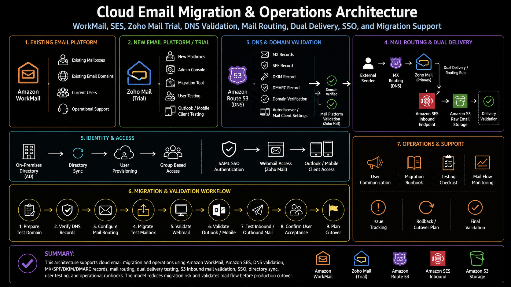

Project Documentation
Cloud Email Migration & Operations
This case study documents cloud email operations and migration planning across Amazon WorkMail, SES inbound mail handling, DNS records, routing, and third-party mail platform validation.
Overview
The project focused on validating mail flow, DNS readiness, routing behavior, identity configuration, and migration planning for cloud-hosted email services.
Problem
Email migrations require careful DNS, identity, routing, and mail flow validation because users depend on reliable delivery and access.
Architecture
The architecture used mail domains, DNS records, mail routing, SES inbound handling, S3 storage for validation, and third-party mailbox testing.

What I Did
I validated DNS records, tested inbound routing, reviewed SES delivery paths, supported migration planning, and documented mail platform behavior.
Implementation Approach
1. Reviewed the current state
I reviewed the existing process, access model, services, operational gaps, and areas where manual work created risk or inconsistency.
2. Mapped the technical workflow
I documented how requests, services, automation, monitoring, and operational follow-up moved through the environment.
3. Implemented or supported the changes
I worked with the relevant AWS services, scripts, IAM controls, monitoring tools, and deployment workflows needed to support the project.
4. Validated the result
I reviewed service behavior, logs, configuration state, security findings, access behavior, and operational output to confirm the work was successful.
5. Documented the outcome
I captured the architecture, implementation flow, operational value, and follow-up considerations so the work could be reviewed and reused.
Outcome
The work helped prove mail routing behavior, reduce migration uncertainty, and support a safer path toward email platform transition.